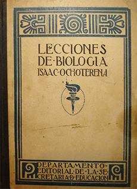
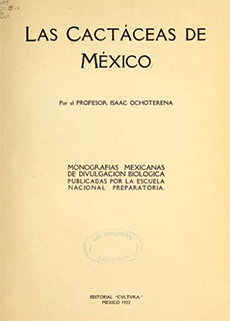

Referencias
- Argueta V. A. R. Noguera y R. Ruiz. 2003. La recepción del Lysenkismo en México. Asclepio 55: 235-262.
- Ledesma-Mateos I. y A. Barahona. 1999. Alfonso Luis Herrera e Isaac Ochoterena: la Institucionalización de la Biología en México. Historia mexicana 48 (3): 635-674.
- Morales L. C. y A. C. Campos. 1995. Isaac Ochoterena: Creador de la biología moderna mexicana. Gobierno del Estado de Puebla, Secretaría de Cultura, 107 pp.
- Ortega M. M., J. L. Godínez y G. Vilaclara. 1996. Relación Histórica de los antecedentes y origen del Instituto de Biología de la Universidad Nacional Autónoma de México. Instituto de Biología, UNAM.
Isaac Ochoterena
1885 - 1950
El libro de texto publicado por Isaac Ochoterena, Lecciones de Biología, que más tarde se convirtió en el Tratado Elemental de Biología, fue reimpreso por casi cincuenta años, de 1922 a 1970, y se utilizó ampliamente en las clases de Biología de la Escuela Nacional Preparatoria, por lo que fue un libro de gran impacto en varias generaciones de estudiantes.
Isaac Ochoterena Mendieta nació en 1885 en Atlixco, Puebla, y murió en la Ciudad de México en 1950. Fue un destacado biólogo, profesor e investigador, que contribuyó significativamente a la construcción e institucionalización de la biología moderna en México.
Su vida escolar comenzó en Puebla, pero años más tarde se mudó junto con su familia a la Ciudad de México, donde estudió el bachillerato en la Escuela Nacional Preparatoria. Tras la muerte de su padre regresó a su tierra natal para comenzar su vida laboral como profesor, trabajo que continuó años después en los estados de Durango y San Luis Potosí, desempeñando además otros cargos como el de Inspector de Educación Pública y Director General de Educación. Paralelamente, realizó exploraciones a varias regiones de México como a la Sierra Madre Occidental y Oriental, de las que derivaron sus primeras publicaciones sobre la vegetación y el relieve de México, comenzando así su gusto por la botánica y en especial por las cactáceas.
Posteriormente regresó a la Ciudad de México, donde en 1916 ingresó a la Dirección de Estudios Biológicos, y a partir de 1921 se desempeñó como maestro universitario en distintas dependencias de la Universidad Nacional Autónoma de México. En 1943 fue miembro del Colegio Nacional.
Publicó 220 escritos en varias áreas de la biología además de la botánica, como la reproducción celular, cancerología, histología comparada, genética y embriología. Se interesó grandemente en la evolución biológica, particularmente en las ideas del naturalista inglés Carlos Darwin, y en el origen de la vida, temas que introdujo en su libro Lecciones de Biología de 1922 y Tratado Elemental de Biología en 1950.
Aportación


Las cactáceas de México, Isaac Ochoterena (Internet Archive)